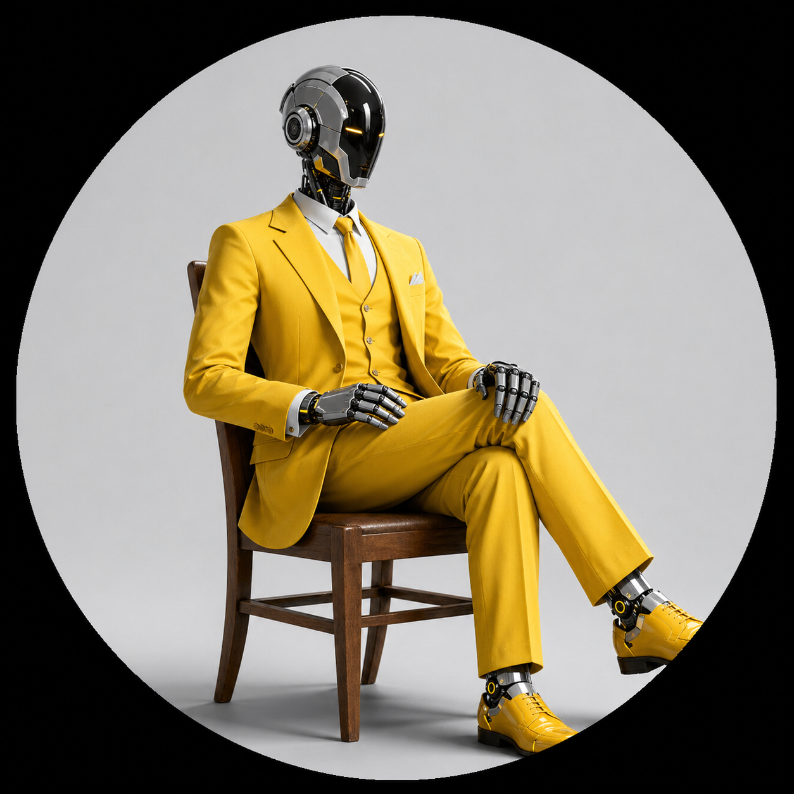
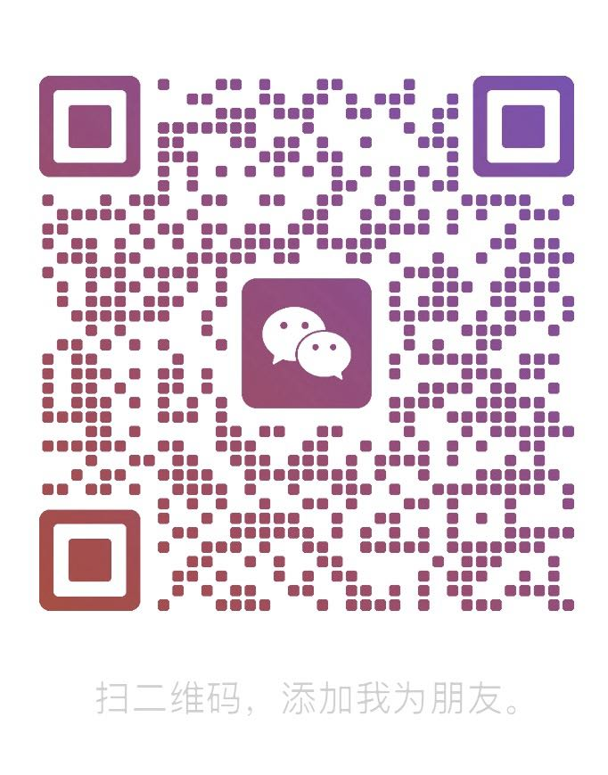

工具平台复杂度
云协作、插件生态、AI 出图、精准设计、图纸链路，都是高复杂协同产品。

jaxxchen把复杂产品能力、平台生态和企业 AI 试点，推进到真实业务现场。
曾服务酷家乐云设计工具，推进云协作、插件生态、AI 出图、精准设计与图纸商业化试点。现在专注企业级 AI 落地陪跑。
Operating System
01
拆业务链路、人员协作、数据入口和重复决策，把“想用 AI”收敛成一组能验证收益的场景。
02
用低成本工具、脚本、小应用或自动化流程快速验证，保留能进入真实业务的部分。
03
把原型嵌入 SOP、权限、反馈和指标，让 AI 能力从演示变成稳定生产力。
云协作、插件生态、AI 出图、精准设计、图纸链路，都是高复杂协同产品。
丁香通询价、自然流量、商机利用率等指标驱动的产品优化。
从付费会员、打赏到图纸商业化试点，关注可持续收入。
Selected Product Battles
推进酷家乐云设计工具中的云协作、首个插件 / 小程序生态、首个 AI 出图能力、概念设计到精准设计能力，以及图纸能力改造和商业化落地试点。
从 0 到 1 搭建产品团队。丁香通日均询价量从 300 提升至 860，聚合流量占比从 7% 提升至 20%；医院汇和大健康平台完成从孵化到上线。
参与内容、社交和商业化迭代，用户规模从不足 400 万增长到近 2000 万，日活跃增长约 500%，付费能力推动月流水达到百万级。
参与 2014 中国用户体验设计大赛并进入前十；团队作品入围德国红点奖与 IF 奖，形成用户、场景和系统表达的产品底层训练。
Products Served
Collaboration
适合已经意识到 AI 重要性，但还缺少场景判断、原型能力和组织推进节奏的团队。
WeChat Contact
适合先做一次轻量沟通：业务场景、团队现状、可试点流程和预期收益。
